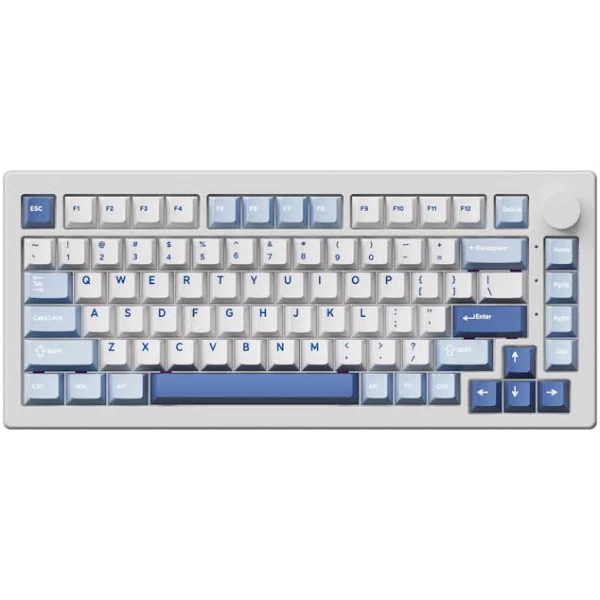

1. Bàn phím cơ lập trình (Mechanical Keyboard)

Bàn phím cơ mang lại cảm giác gõ phím chuẩn xác và giảm mỏi tay khi làm việc trong thời gian dài. Thiết bị hỗ trợ kết nối đa thiết bị, phù hợp cho sinh viên ngành Công nghệ thông tin thường xuyên di chuyển.